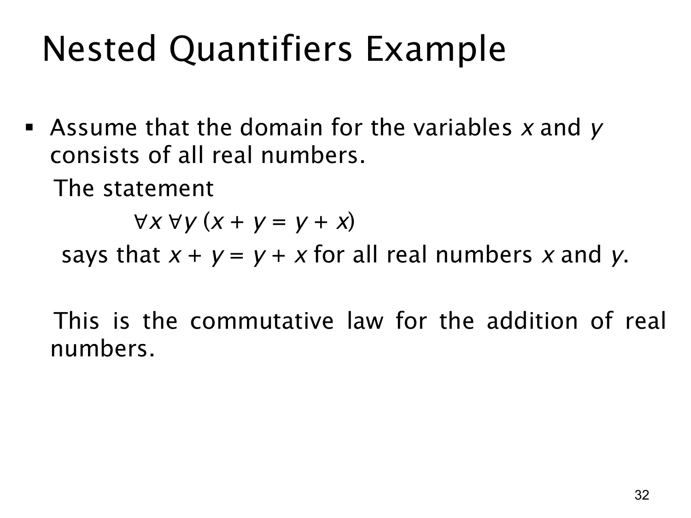

L1.2 · 第 32 页讲解原文
查看这一页课件

嵌套量词入门：两个变量都取遍实数
这页开始讨论嵌套量词（nested quantifiers）：一个谓词含多个变量，需要分别说明每个变量如何取值。这里 x 与 y 的论域都为所有实数，公式是
∀x∀y(x+y=y+x).
从外向内读：对每一个实数 x，再对每一个实数 y，等式 x+y=y+x 都成立。换言之，无论任取哪一对实数，它们的和不受加法顺序影响；这是实数加法的交换律（commutative law）。
这里两个量词都是全称量词，所以要求检查的是整个 R×R 中的所有有序数对 (x,y)，不是只找一对满足的数，也不是要求 x=y。例如 (2,5)、(−1,3) 和 (0,2) 都是被涵盖的数对，但单独验证这些例子仍不足以证明整个全称式；其真实性来自实数加法的普遍性质。
由于两层都是全称量词，调换为 ∀y∀x(x+y=y+x) 不改变所检查的数对集合；后面若混用 ∀ 与 ∃，量词的顺序通常就需要特别留意。